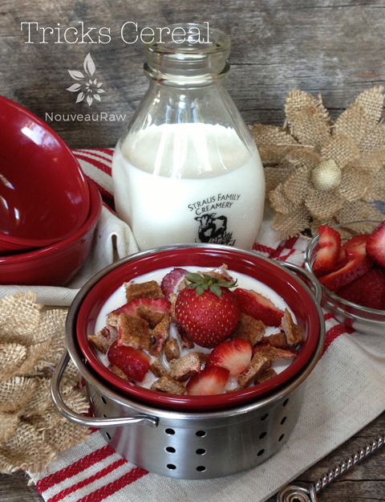

Tricks Cereal

~ raw, vegan, gluten-free ~
No-Trix (tricks) here! When I set out to create this cereal, I wasn’t trying to mimic any other cereal; I had no intention of making it taste like anything in particular, other than de-lic-ious! But while it was dehydrating the cereal and its aroma was escaping my pantry… it smelt… fruity. I couldn’t wait.
The next morning I pulled it out of the dehydrator and set it out on the countertop to cool. Bob walked by and snatched a piece. Bob walked by again and snatched another piece… I had decided I better snag a photo and yield amount before he wore a path in the wood floor.
As I was getting it ready to take a picture, I popped one in my mouth. It tasted like… what did it taste it like… I know this taste… I have tasted it before… “Bob, does this cereal taste familiar to you, maybe like Trix Cereal?” He agreed, it tasted just like it. It doesn’t look anything like it, but it sure is scrumptious.
I did a little research on Trix Cereal. When it was introduced in 1955 by General Mills, it was composed of more than 46% sugar! The original cereal included three colors: “Orangey Orange,” “Lemony Yellow,” and “Raspberry Red.” Sort of odd that I used apples and strawberries, so opposite of the GM version, yet it tastes so close. Hmm.
Anyway, as I read on, my eyes drifted over this write-up from their site, “Fruity flavors and calcium make Trix® a fun, healthy way to start the day. Trix cereal is not only a good source of calcium, but it also provides 11 other essential vitamins and minerals, and 12 grams of whole grain* in every serving. It’s a cereal with the taste kids love, and the goodness moms love to serve.” (source) I did more research; I wanted to see what they used to make it. They used 37 different ingredients;
Ingredients (37): Corn Meal, Corn Flour, Sugar, Corn Syrup, Canola Oil and/or, Rice Bran Oil, Corn Starch Modified, Corn Starch, Salt, Guar Gum, Gum Arabic, Corn Syrup High Fructose, Calcium Carbonate, Dicalcium Phosphate, Trisodium Phosphate, Red 40, Yellow 6, Blue 1, Other Color Added, Baking Soda, Sodium Citrate, Flavor(s) Natural & Artificial, Citric Acid, Malic Acid, Zinc,Iron, Vitamin C, BHT, Vitamin B1, Vitamin B12, Vitamin B2, Vitamin B6, Vitamin D, Wheat Starch Freshness Preserved By, Vitamin aB, Vitamin aB, Vitamin A Palmitate (source)
I am not a mom, but I am a wife who loves to feed her husband, and I don’t think that I would feel so good serving this cereal to my husband. The version that I made below, well now that I can get on board with that. Enjoy.
Ingredients:
Yields 2 cups cereal squares
- 1 1/2 cup packed, moist almond pulp
- 1 cup apple sauce
- 6 Tbsp date paste
- 1 tsp vanilla extract
- 1/4 tsp Himalayan pink salt
- 2 cups diced fresh organic strawberries
Preparation:
- In a medium-sized mixing bowl, combine almond pulp, applesauce, date paste, vanilla, and salt. Mix until everything is well combined. Then hand mix in the strawberries.
- Spread the batter out on the teflex sheet that comes with the dehydrator.
- You can also use parchment paper, but to avoid sticking, do not use wax paper.
- Spread 1/4″ thick. Square up the edges and then score into bite-sized pieces. During the drying process, it will shrink up just a little. I used a long metal ruler for scoring purposes.
- Dehydrate at 145 degrees for 1 hour, then reduce to 115 (F) degrees for 8-10 hours or until dry.
- Store in an airtight container in the fridge for 1-2 weeks or in the freezer for 1 month.
Culinary Explanations:
- Why do I start the dehydrator at 145 degrees (F)? Click (here) to learn the reason behind this.
- When working with fresh ingredients, it is essential to taste test as you build a recipe. Learn why (here).
- Don’t own a dehydrator? Learn how to use your oven (here). I do, however, honestly believe that it is a worthwhile investment. Click (here) to learn what I use.
© AmieSue.com